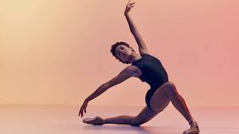

DANCE
Dance is a performing art form consisting of purposefully selected sequences of human movement. This movement has aesthetic and symbolic value, and is acknowledged as dance by performers and observers within a particular culture.[nb 1] Dance can be categorized and described by its choreography, by its repertoire of movements, or by its historical period or place of origin.[4] An important distinction is to be drawn between the contexts of theatrical and participatory dance,[5] although these two categories are not always completely separate; both may have special functions, whether social, ceremonial, competitive, erotic, martial, or sacred/liturgical. Other forms of human movement are sometimes said to have a dance-like quality, including martial arts, gymnastics, cheerleading, figure skating, synchronised swimming, marching bands, and many other forms of athletics.